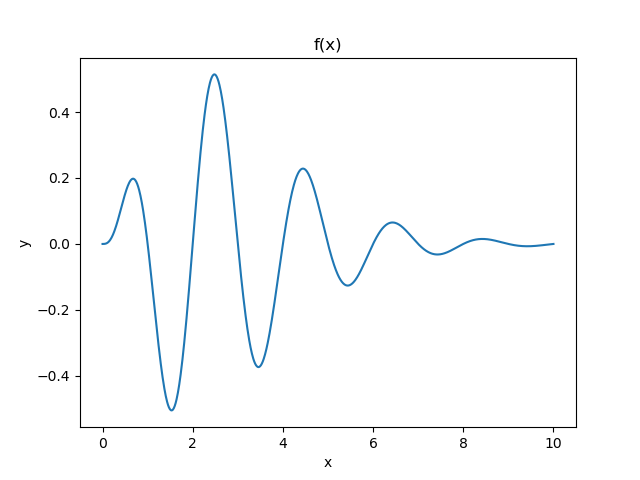

https://matplotlib.org/
Matplotlib: Visualization with Python
https://matplotlib.org/tutorials/index.html
pip install matplotlib or conda install matplotlib In Debian Linux we have python-matplotlib, python3-matplotlib, and dependences.
Matplotlib is a comprehensive library for creating static, animated, and interactive visualizations in Python.
Matplotlib 3 is Python 3 only, Matplotlib 2 supports Python 2.
matplotlib.pyplot is a state-based interface to matplotlib. It provides a MATLAB-like way of plotting. pyplot is mainly intended for interactive plots and simple cases of programmatic plot generation. The object-oriented API is recommended for more complex plots.
There are two big components that you need to take into account:
import matplotlib.pyplot as plt
plt.plot([1, 2, 3, 4], [10, 20, 25, 30]) # line segments
plt.scatter([0.3, 3.8, 1.2, 2.5], [11, 25, 9, 26]) # points
plt.show() # display a figure
plt.savefig("plot1.png") # saving a figure to a file
Matplotlib is often used to visualize analyses or calcuations. Data can be stored in Python lists, NumPy arrays, PIL images. All sequences are converted to numpy arrays internally.
# The vectorization technique. Plotting a function
# f(x) = x^2 exp(-a*x) sin(pi*x)
import numpy as np
import matplotlib.pyplot as plt
x = np.linspace(0,10,1000)
a = 1.0
y = x**2 * np.exp(-a*x) * np.sin(np.pi*x) # numpy functions!
plt.plot(x, y)
plt.title("f(x)")
plt.xlabel("x")
plt.ylabel("y")
plt.show()
